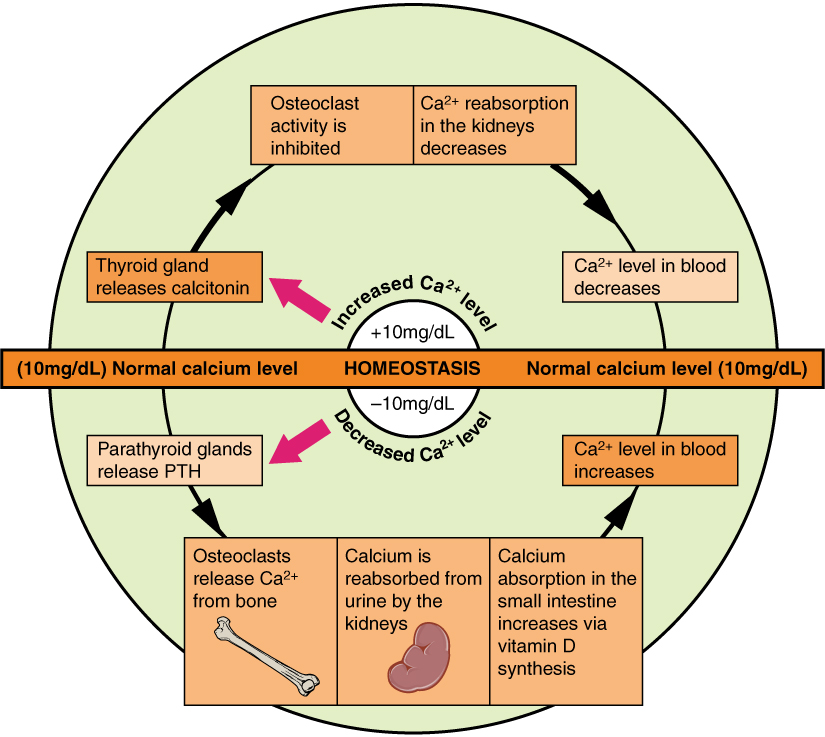
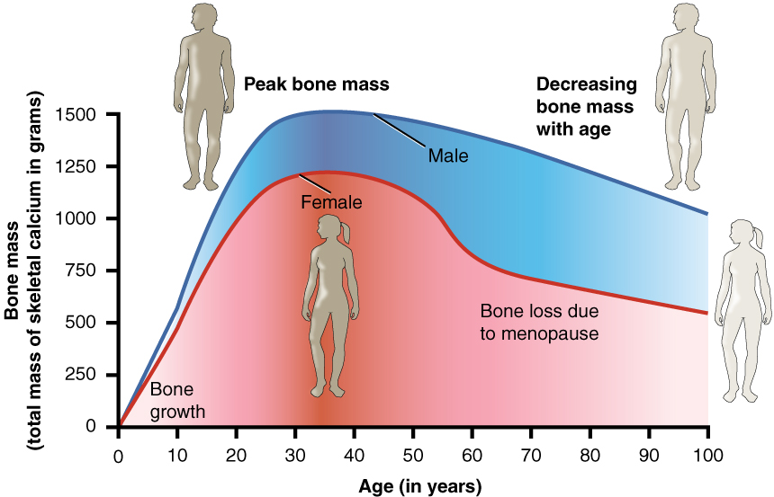
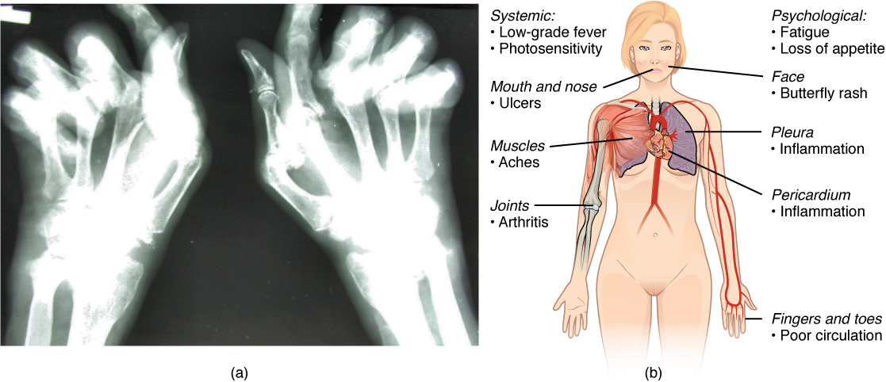
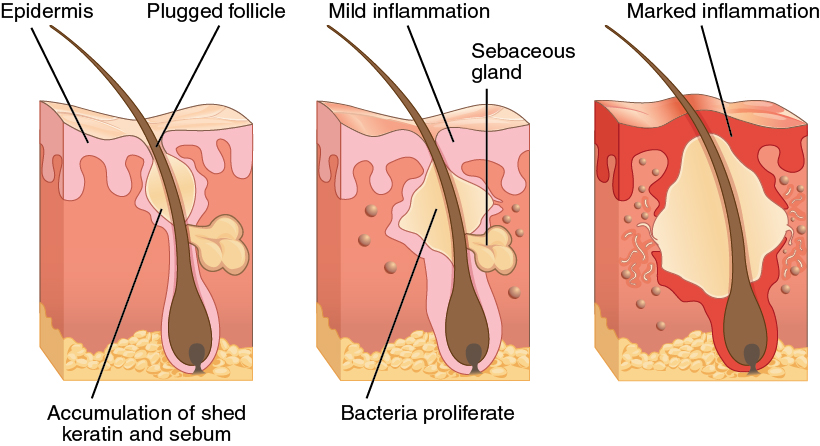
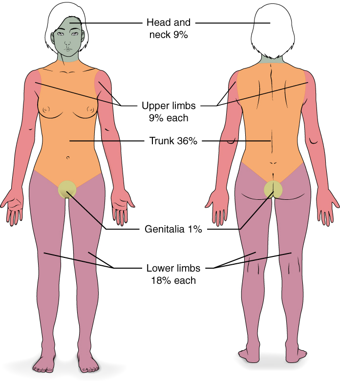

Bone & Skin Drugs
Bone and skin look like the quiet parts of the body — scaffolding and wrapping paper. They are neither. Bone is a living, constantly rebuilt mineral bank that the body raids whenever blood calcium dips, and skin is a barrier that fails loudly and expensively when it is burned, inflamed, or broken. The drugs in this chapter are unusually dependent on you: a bisphosphonate swallowed the wrong way can burn a hole in an esophagus, methotrexate taken daily instead of weekly can kill, and a burn cream chosen carelessly can tip a patient into metabolic acidosis. Almost nothing here is about the pill itself. It is about how it is given, what you watch, and what you teach.
By the end of this chapter you can
- Explain bone remodeling and describe how PTH, vitamin D, and calcitonin hold serum calcium steady.
- Compare calcium salts and vitamin D preparations, apply the concept of elemental calcium, and give IV calcium safely.
- Teach the administration rules for oral bisphosphonates and recognize osteonecrosis of the jaw and atypical femoral fracture.
- Contrast antiresorptive and anabolic osteoporosis drugs, including denosumab, raloxifene, teriparatide, and romosozumab.
- Distinguish drugs that treat an acute gout flare from drugs that lower urate long term, and name the dangerous interactions of each.
- Describe the monitoring and safety teaching for methotrexate, hydroxychloroquine, and biologic DMARDs.
- Apply topical corticosteroid potency, vehicle, and quantity rules, and explain the iPLEDGE requirements for isotretinoin.
- Select and monitor topical burn antimicrobials and debriding agents, and state the signature toxicity of each.
Section 1Bone, calcium & vitamin D

Bone is never finished
The skeleton you have today is not the skeleton you had ten years ago. Bone is torn down and rebuilt continuously in a process called remodeling, carried out by two cell crews working in opposition. Osteoclasts are the demolition crew: they attach to a patch of bone, acidify it, and dissolve the mineral, releasing calcium into the blood. Osteoblasts are the construction crew: they lay down new collagen matrix and mineralize it. In a healthy adult the two are balanced. Tip the balance toward the clasts and bone thins; tip it toward the blasts and bone thickens.
The signal that decides the balance is worth memorizing because half the drugs in the next section act on it. Osteoblasts secrete a protein called RANK ligand (RANKL), which binds RANK receptors on osteoclast precursors and tells them to mature and start resorbing. Osteoblasts also secrete a decoy, osteoprotegerin, that mops up RANKL and shuts resorption down. Estrogen restrains RANKL — which is precisely why bone loss accelerates after menopause, when estrogen falls and the demolition crew works unsupervised.
The calcium thermostat
Serum calcium is defended within a narrow band (roughly 8.5–10.5 mg/dL total) because so much depends on it: nerve conduction, muscle contraction, clotting, and cardiac rhythm. Three hormones do the defending.
Parathyroid hormone (PTH) is the emergency responder. When calcium falls, the parathyroid glands release PTH, which pulls calcium out of bone, tells the kidney to reabsorb calcium (while dumping phosphate), and switches on the enzyme that activates vitamin D. Everything PTH does raises calcium. Vitamin D, once activated, is the absorber — it makes the gut take calcium in from food. Calcitonin, from the thyroid, is the brake: it "tones down" calcium by blocking osteoclasts. A simple way to hold it: PTH pulls calcium up, calcitonin tones it down.
Vitamin D deserves a moment because it is not really a vitamin — it is a hormone made in two steps. Skin makes cholecalciferol from sunlight, or the patient swallows cholecalciferol (D3) or ergocalciferol (D2). The liver then hydroxylates it to 25-hydroxyvitamin D — the storage form, and the one the lab measures when someone orders a "vitamin D level." Finally the kidney performs the activating step, producing calcitriol (1,25-dihydroxyvitamin D). That last step is the clinical punchline: a patient with advanced kidney disease cannot activate ordinary vitamin D no matter how much you give, so they are prescribed calcitriol or a related activated analog instead.
Giving calcium and vitamin D without causing harm
Calcium supplements are labeled by salt weight, but only part of that weight is usable elemental calcium. Calcium carbonate is about 40% elemental calcium — the most calcium per tablet, and cheap — but it needs stomach acid to dissolve, so it must be taken with food and it works poorly in patients on proton pump inhibitors or H2 blockers, or after gastric surgery. Calcium citrate is only about 21% elemental (more tablets), but it dissolves without acid, so it can be taken with or without food and is the right choice for the acid-suppressed patient. Either way, the gut can only absorb roughly 500–600 mg of elemental calcium at one time, so a 1,200 mg daily target must be split into two or three doses. Constipation is the near-universal side effect; fluids, fiber, and activity are part of the teaching, not an afterthought.
| Agent | Class / form | Key effect | Nursing alert |
|---|---|---|---|
| Calcium carbonate | Oral calcium salt (~40% elemental) | Highest calcium per tablet; also an antacid | Give with food — needs acid. Ineffective with PPIs. Constipation. Separate from levothyroxine, tetracyclines, fluoroquinolones, and iron by 2–4 h. |
| Calcium citrate | Oral calcium salt (~21% elemental) | Absorbed without gastric acid | Choice for patients on acid suppression or post-gastrectomy; may be taken any time. More tablets per dose. |
| Calcium gluconate | IV calcium (~9% elemental) | Corrects symptomatic hypocalcemia | Preferred peripherally. Give slowly by pump; cardiac monitor. Extravasation causes necrosis. |
| Calcium chloride | IV calcium (~27% elemental) | Three times the calcium of gluconate; fast | Central line strongly preferred — severe vesicant. Emergency/code use. Never confuse the two salts. |
| Cholecalciferol (D3) / ergocalciferol (D2) | Vitamin D precursor | Needs liver and kidney activation | Fat-soluble — it accumulates. Excess causes hypercalcemia. Check 25-OH vitamin D, not calcitriol. |
| Calcitriol | Activated vitamin D | Already active — bypasses the kidney step | For chronic kidney disease. Monitor calcium, phosphate, PTH. Hypercalcemia comes on faster than with D3. |
| Calcitonin-salmon | Hormone (nasal, SC) | Inhibits osteoclasts; lowers calcium | Adjunct in hypercalcemia and Paget disease; tachyphylaxis in days. Alternate nares; rhinitis is common. |
Two clinical pictures should be automatic. Hypocalcemia makes nerves twitchy: numbness and tingling around the mouth and fingers, muscle cramps, positive Chvostek (facial tap) and Trousseau (cuff-induced carpal spasm) signs, tetany, laryngospasm, seizures, and a prolonged QT. Hypercalcemia makes everything sluggish — "stones, bones, groans, thrones, and psychiatric overtones": kidney stones, bone pain, nausea and constipation, polyuria, lethargy and confusion, and a shortened QT.
- Osteoclasts resorb bone, osteoblasts build it; RANKL drives resorption and osteoprotegerin blocks it — the target of several drugs.
- PTH raises calcium (bone, kidney, vitamin D activation); calcitonin lowers it.
- Vitamin D is activated in the liver then kidney; kidney failure means giving calcitriol, not cholecalciferol.
- Only elemental calcium counts; carbonate needs acid and food, citrate does not; absorb no more than 500–600 mg per dose.
Section 2Osteoporosis drugs

Bisphosphonates: the first-line drugs, and the fussiest
Bisphosphonates — alendronate, risedronate, ibandronate, and IV zoledronic acid — are antiresorptive drugs. They bind tightly to the hydroxyapatite mineral of bone and sit there. When an osteoclast comes along and dissolves that patch, it swallows the drug, which poisons an enzyme (farnesyl pyrophosphate synthase) the osteoclast needs to survive. The osteoclast undergoes apoptosis. Demolition slows, the blasts keep building, and bone density climbs.
The problem is that oral bisphosphonates are absorbed miserably — well under 1% of the dose — and they are corrosive to the esophagus. That combination generates the most heavily tested administration rules in all of pharmacology, and they are not negotiable:
- Take first thing in the morning, on a completely empty stomach, before any other food, drink, or medication.
- Swallow with a full glass (6–8 oz) of plain water — not coffee, juice, mineral water, or milk. Calcium, iron, magnesium, and antacids block absorption entirely.
- Remain fully upright — sitting or standing, never lying down — for at least 30 minutes (a full 60 minutes for ibandronate).
- Wait that same interval before eating, drinking anything else, or taking other drugs.
- Do not give to a patient who cannot sit or stand upright for that long, or who has esophageal stricture, achalasia, or delayed emptying.
- Correct hypocalcemia and vitamin D deficiency first — an antiresorptive given to a calcium-depleted patient drives calcium lower.
Two rarer adverse effects earn their own teaching. Osteonecrosis of the jaw (ONJ) is exposed, non-healing jaw bone, most often after a dental extraction; the risk is highest with IV, high-dose, oncology-level therapy, and the nursing action is to arrange a dental exam and any needed extractions before therapy starts, then reinforce meticulous oral hygiene. Atypical femoral fracture is a transverse fracture of the femoral shaft after years of therapy, and it announces itself first: teach every patient that new, dull, aching thigh or groin pain must be reported immediately, because that prodrome is the window to catch it before the bone snaps.
IV zoledronic acid is once yearly, which solves adherence, but check renal function first (generally avoid if creatinine clearance is under about 35 mL/min), hydrate the patient well, and warn them about the acute phase reaction — a flu-like day or two of fever, myalgia, and headache after the first infusion, blunted by acetaminophen and unlikely to recur.
When a bisphosphonate is not the answer
Denosumab is a monoclonal antibody against RANKL — a manufactured osteoprotegerin. Given subcutaneously every 6 months, it is not cleared by the kidney, so it can be used at renal function where bisphosphonates are contraindicated — but that convenience comes with a warning. It carries a boxed warning for severe hypocalcemia in patients with advanced chronic kidney disease (including those on dialysis), so calcium and vitamin D must be repleted and serum calcium checked before each injection and monitored closely afterward in those patients. It also carries a rule that patients under-appreciate: it must not be stopped or delayed without a replacement antiresorptive, because withdrawal triggers a rebound surge of bone resorption and multiple vertebral fractures. ONJ occurs here too.
Raloxifene is a selective estrogen receptor modulator (SERM): an estrogen agonist at bone (density up) and an antagonist at breast (invasive breast cancer risk down), while sparing the uterus. Its price is estrogen's thrombotic risk — a boxed warning for venous thromboembolism and fatal stroke in women at risk. Teach that it should be stopped 72 hours before prolonged immobilization (surgery, long travel) and restarted only when fully mobile. Hot flashes and leg cramps are common.
Everything above slows demolition. Two drug groups actually build bone. Teriparatide and abaloparatide are PTH-pathway analogs, given as a daily subcutaneous injection; the trick is that intermittent PTH exposure stimulates osteoblasts, whereas the continuous exposure of hyperparathyroidism destroys bone. Watch for hypercalcemia, and warn about orthostatic hypotension with the first several doses — the patient should inject where they can sit or lie down immediately. Avoid in patients at baseline increased risk of osteosarcoma (Paget disease, prior skeletal radiation, unexplained elevated alkaline phosphatase). Romosozumab inhibits sclerostin, building bone while also slowing resorption, given monthly for 12 months only — but it carries a boxed warning for myocardial infarction, stroke, and cardiovascular death and must not be used in anyone who has had an MI or stroke within the past year.
| Class | Prototype | Key effect | Nursing alert |
|---|---|---|---|
| Bisphosphonate | Alendronate (also risedronate, ibandronate, IV zoledronic acid) | Antiresorptive — osteoclast apoptosis | Empty stomach, plain water, upright 30 min (60 for ibandronate). Report thigh/groin pain (atypical fracture). Dental exam first (ONJ). |
| RANKL inhibitor | Denosumab | Antiresorptive monoclonal antibody; SC q6 months | Not renally cleared — an option when bisphosphonates are not. Boxed warning: severe hypocalcemia in advanced CKD — correct calcium and vitamin D first, check calcium before each dose. Never stop abruptly — rebound vertebral fractures. ONJ risk. |
| SERM | Raloxifene | Estrogen agonist at bone, antagonist at breast | Boxed warning: VTE and fatal stroke. Stop 72 h before immobilization. Hot flashes, leg cramps. |
| PTH analog (anabolic) | Teriparatide, abaloparatide | Builds bone — daily SC injection | Orthostatic hypotension with early doses — sit or lie down. Monitor calcium. Rotate sites; refrigerate. |
| Sclerostin inhibitor (anabolic) | Romosozumab | Builds bone; monthly SC ×12 months | Boxed warning: MI, stroke, CV death. Contraindicated if MI or stroke within 1 year. |
| Calcitonin-salmon | Calcitonin nasal spray | Weak antiresorptive; some analgesia in vertebral fracture | Last-line. Rhinitis, epistaxis — alternate nares daily. Effect fades (tachyphylaxis). |
- Bisphosphonates are first-line: empty stomach, plain water, upright 30 min (60 for ibandronate), nothing else by mouth for that interval.
- Teach the two long-term signals: thigh/groin pain (atypical femoral fracture) and jaw pain or exposed bone (ONJ, so dental work goes first).
- Denosumab is not renally cleared, but carries a boxed warning for severe hypocalcemia in advanced CKD — correct calcium before each dose — and it cannot be stopped abruptly.
- Teriparatide, abaloparatide, and romosozumab build bone; everything else mostly slows its loss.
Section 3Gout & antiarthritis drugs

Gout: put out the fire, then lower the fuel
Gout is uric acid crystallizing in a joint. Two entirely separate jobs follow, and mixing them up is the classic error. Job one is stopping the acute flare — an anti-inflammatory problem. Job two is lowering serum urate for the long run, which does nothing for today's pain and can even provoke a flare when it starts.
For the flare, three options: an NSAID (naproxen, indomethacin), a corticosteroid (oral, or injected into a single hot joint), or colchicine. Colchicine is the interesting one. It binds tubulin, wrecking the microtubules that neutrophils need in order to crawl into the joint and unleash inflammation. It has no analgesic and no urate-lowering effect at all — it simply keeps the neutrophils away. Modern dosing is low: 1.2 mg at the first hint of a flare, then 0.6 mg one hour later. The signature toxicity is gastrointestinal — nausea, vomiting, and diarrhea are the first sign of toxicity, and the instruction is to stop the drug, not push through. Colchicine is cleared by CYP3A4 and P-glycoprotein, so combining it with clarithromycin, verapamil, diltiazem, cyclosporine, or a strong azole in a patient with kidney impairment has caused fatal marrow suppression and myopathy. Note also that aspirin is avoided in gout: low doses raise urate.
For the long run, allopurinol is the anchor. It inhibits xanthine oxidase, the enzyme that manufactures uric acid, so less is produced. Start low (100 mg, less in kidney disease) and titrate slowly to a serum urate under 6 mg/dL; encourage 2–3 L of fluid daily. Because starting it mobilizes urate and can set off a flare, patients are covered with low-dose colchicine or an NSAID for the first several months. Two allopurinol facts must be reflexes: any rash means stop the drug and call immediately (allopurinol is a leading cause of Stevens–Johnson syndrome, toxic epidermal necrolysis, and DRESS), and allopurinol blocks the metabolism of azathioprine and mercaptopurine, causing life-threatening bone marrow suppression unless those doses are slashed. Febuxostat is an alternative xanthine oxidase inhibitor for allopurinol-intolerant patients, but it carries a boxed warning for cardiovascular death and is second-line. Probenecid takes the other route — it is a uricosuric, blocking urate reabsorption in the renal tubule so more is excreted; it needs decent kidney function and generous fluids, and it is avoided if the patient has a history of stones. Pegloticase, an IV enzyme that dissolves urate directly, is reserved for refractory tophaceous gout: boxed warning for anaphylaxis, and it must never be given in G6PD deficiency (hemolysis, methemoglobinemia) — so screening comes first.
| Class | Prototype | Key effect | Nursing alert |
|---|---|---|---|
| Anti-inflammatory (flare) | Colchicine | Blocks neutrophil migration into the joint | GI upset = toxicity — stop the drug. Fatal interactions with clarithromycin, verapamil, cyclosporine. Reduce in renal impairment. No analgesic effect. |
| NSAID (flare) | Naproxen, indomethacin | Blocks prostaglandin-driven inflammation | GI bleeding, renal injury, fluid retention. Take with food. Do not use aspirin as the NSAID — low doses raise urate. |
| Corticosteroid (flare) | Prednisone; intra-articular triamcinolone | Broad anti-inflammatory | Hyperglycemia, infection risk, insomnia. Useful when NSAIDs and colchicine are contraindicated. |
| Xanthine oxidase inhibitor | Allopurinol | Makes less uric acid; target urate <6 mg/dL | Any rash → stop and report (SJS/TEN/DRESS). Deadly with azathioprine/mercaptopurine. Fluids 2–3 L/day. Expect early flares — cover with prophylaxis. |
| Xanthine oxidase inhibitor | Febuxostat | Alternative when allopurinol fails or is not tolerated | Boxed warning: cardiovascular death. Monitor LFTs. Second-line. |
| Uricosuric | Probenecid | Excretes more uric acid | Needs adequate renal function; push fluids; avoid with stone history. Salicylates cancel it. Raises penicillin levels. |
| Recombinant uricase | Pegloticase IV | Enzymatically destroys urate; for refractory tophaceous gout | Boxed warning: anaphylaxis — premedicate, monitor. Screen for G6PD deficiency first — contraindicated. |
DMARDs: changing the disease, not just the symptoms
Rheumatoid arthritis is not gout and it is not wear-and-tear osteoarthritis — it is an autoimmune attack on the synovium that erodes joints permanently. NSAIDs and steroids make an RA patient feel better while the joints quietly dissolve. Disease-modifying antirheumatic drugs (DMARDs) slow the disease itself, and the guiding principle is to start them early, within weeks of diagnosis, before erosion is done. They work slowly — weeks to months — which is a teaching point, because a patient who expects ibuprofen-speed relief will stop taking them.
Methotrexate is the anchor DMARD and the single most dangerous prescribing error in this chapter. At RA doses it is given once weekly. Taken daily by mistake — and this has happened, and patients have died — it produces catastrophic mucositis and pancytopenia. Confirm the weekly schedule out loud with the patient and with anyone taking a verbal order, and check that the pill bottle and the MAR say weekly. Daily folic acid (usually 1 mg, not on the methotrexate day in some regimens) blunts the mouth sores, GI upset, and marrow effects without blocking the benefit. Methotrexate carries boxed warnings for bone marrow suppression, hepatotoxicity, pulmonary toxicity, and embryo-fetal toxicity — it is contraindicated in pregnancy, and effective contraception is required for both partners. Monitor CBC, LFTs, and creatinine. Teach no alcohol, report a persistent dry cough or dyspnea (pneumonitis) and mouth ulcers (the earliest toxicity sign). Avoid trimethoprim/sulfamethoxazole, which is an additive antifolate and can produce pancytopenia. Leucovorin is the rescue agent.
Among the other conventional DMARDs, hydroxychloroquine is the gentlest — and the one with a memorable rule: it can deposit in the retina, so patients need a baseline and annual eye exam and must report changes in vision or color perception. Sulfasalazine is avoided in sulfa allergy and G6PD deficiency and turns urine orange-yellow (harmless, but tell them). Leflunomide is hepatotoxic and a potent teratogen with a very long half-life, requiring a cholestyramine washout if pregnancy occurs or is planned.
The biologic DMARDs — TNF inhibitors (etanercept, adalimumab, infliximab), plus IL-6, T-cell, and B-cell agents — are extraordinarily effective and share one governing safety idea: they take the brakes off infection. Every patient is screened for latent tuberculosis and hepatitis B before the first dose, boxed warnings cover serious infections and malignancy including lymphoma, live vaccines are contraindicated during therapy, and the drug is held during any active infection and usually around surgery. The oral JAK inhibitors (tofacitinib, baricitinib, upadacitinib) add boxed warnings for major adverse cardiovascular events, thrombosis, malignancy, and mortality.
- Gout has two separate jobs: quench the flare (colchicine, NSAID, steroid) and lower urate long term (allopurinol, febuxostat, probenecid) — urate-lowering drugs do nothing for today's pain.
- Colchicine GI upset = toxicity, stop; allopurinol rash = stop and report; allopurinol plus azathioprine/mercaptopurine can be fatal.
- Methotrexate is weekly with daily folic acid; monitor CBC/LFTs, no alcohol, contraindicated in pregnancy, mouth ulcers are the first sign of trouble.
- Before any biologic DMARD: screen for latent TB and hepatitis B, no live vaccines, hold for active infection.
Section 4Skin drugs

Acne: four problems, four drug jobs
Acne is not dirt. Four things go wrong in a follicle: sebum production rises (androgen-driven), the follicle lining sheds abnormally and plugs the pore, Cutibacterium acnes multiplies behind the plug, and inflammation follows. Every acne drug attacks one of those four, which is exactly why combinations work better than any single agent.
Benzoyl peroxide kills the bacteria by releasing free radicals — and crucially, bacteria do not develop resistance to it. Teach that it bleaches fabric: white towels and pillowcases, or ruined ones. Topical retinoids (tretinoin, adapalene, tazarotene) fix the plugging by normalizing follicular shedding; apply a pea-sized amount at bedtime to dry skin, expect an initial worsening and peeling for several weeks, use non-comedogenic moisturizer, and use sunscreen because they cause photosensitivity. Topical antibiotics (clindamycin, erythromycin) should essentially never be used alone — always pair with benzoyl peroxide to prevent resistance. Oral antibiotics for moderate inflammatory acne are usually doxycycline or minocycline: photosensitivity again, pill-induced esophagitis (full glass of water, stay upright), and contraindicated in pregnancy and in children under 8 (tooth staining). Hormonal options — combined oral contraceptives, spironolactone (monitor potassium) — target the androgen driver.
Isotretinoin is the only drug that hits all four mechanisms, and it is the most tightly controlled drug most nurses will ever handle. It is a severe teratogen, and dispensing runs through the iPLEDGE risk management program: patients who can become pregnant must use two forms of contraception beginning one month before, throughout, and for one month after therapy, with monthly negative pregnancy tests and monthly program authorization. There is no blood donation during therapy or for a month afterward, because a transfused unit could reach a pregnant recipient. Expected effects: cheilitis in nearly everyone (dry cracked lips), dry eyes and nose, epistaxis, myalgia, night-vision changes, elevated triglycerides, and hepatotoxicity — so monitor lipids and LFTs and teach no alcohol. Mood changes should be reported. And a hard rule: never combine isotretinoin with a tetracycline — the pair raises intracranial pressure (pseudotumor cerebri, presenting as headache, visual changes, and nausea).
Psoriasis: turning down an overdriven immune system
Psoriasis is immune-driven hyperproliferation — keratinocytes turning over in days instead of weeks, producing thick silvery plaques. Mild disease is topical: corticosteroids (the workhorse), vitamin D analogs like calcipotriene (do not exceed the weekly maximum — systemic absorption causes hypercalcemia; it is inactivated by salicylic acid, so do not layer them), tazarotene, coal tar, and calcineurin inhibitors (tacrolimus, pimecrolimus ointment) for the face and skin folds where steroids thin the skin. Moderate to severe disease escalates to phototherapy (narrowband UVB; or PUVA, where oral methoxsalen plus UVA requires UV-blocking eyewear for 24 hours after the dose) and systemic drugs: methotrexate, cyclosporine, acitretin (a retinoid, and a teratogen so persistent that pregnancy must be avoided for 3 years after and alcohol is forbidden because it regenerates a long-lived metabolite), apremilast, and the biologics — TNF inhibitors, IL-17 blockers (secukinumab, ixekizumab), and IL-23 blockers (guselkumab, risankizumab). All of the biologics carry the same TB-screening and infection precautions as in rheumatoid arthritis.
Topical corticosteroids: potency, vehicle, quantity, and time
Topical steroids are the most used and most misused drugs in dermatology, and the nursing content is four variables. Potency is ranked in classes from 1 (superpotent, e.g., clobetasol) to 7 (low, e.g., hydrocortisone 1%). Vehicle changes potency for the same molecule: ointments are the most potent because they occlude and hydrate (best for thick, dry, scaly skin), creams are middle-ground and cosmetically acceptable, and lotions, gels, solutions, and foams are for hairy areas and the scalp. Quantity is measured in the fingertip unit — the ribbon squeezed from the tip of an adult index finger to the first crease, about 0.5 g, which covers an area equal to two adult palms. Time matters because effects accumulate.
| Class | Prototype | Key effect | Nursing alert |
|---|---|---|---|
| Superpotent / high (I–II) | Clobetasol propionate 0.05% | Thick plaques on palms, soles, scalp, trunk | Never on face, groin, or axilla. Limit to ~2 weeks. HPA-axis suppression with large areas or occlusion. Do not exceed the labeled weekly gram limit. |
| Medium (III–V) | Triamcinolone acetonide 0.1% | Everyday eczema/dermatitis on the trunk and limbs | Thin layer, limited duration. Watch for atrophy, striae, telangiectasia in flexures. |
| Low (VI–VII) | Hydrocortisone 1–2.5% | Face, eyelids, groin, infants | Safest for thin skin. Even here, prolonged facial use causes perioral dermatitis and rebound. |
| Steroid-sparing topical | Tacrolimus / pimecrolimus ointment | Calcineurin inhibitor — no skin atrophy | For face and folds. Transient burning/stinging is expected. Boxed warning: possible malignancy risk. Strict sun protection. |
| Topical vitamin D analog | Calcipotriene | Normalizes keratinocyte turnover in psoriasis | Respect the weekly maximum — hypercalcemia. Inactivated by salicylic acid. Irritating on the face. |
| Systemic retinoid | Isotretinoin (acne); acitretin (psoriasis) | Definitive but teratogenic | iPLEDGE, two contraceptives, monthly pregnancy tests, no blood donation. Never with a tetracycline (pseudotumor cerebri). Acitretin: no pregnancy for 3 years, no alcohol. |
The adverse effects follow directly from what steroids do. Locally: skin atrophy, striae, telangiectasia, hypopigmentation, acneiform eruption, and tachyphylaxis (the drug stops working, so patients use more, which is the trap). Systemically, absorption is greatest where skin is thin (face, eyelids, genitals), where skin is inflamed and barrier-broken, where the surface area is large, and wherever the site is occluded. Children absorb disproportionately more because their body-surface-to-weight ratio is high. The rule set is short: lowest potency that works, thin layer, shortest duration, no occlusion unless it is ordered, and do not put a potent steroid on the face or in a skin fold.
- Acne drugs target four things: sebum, plugging (retinoids), bacteria (benzoyl peroxide — no resistance, bleaches fabric), and inflammation. Never use a topical antibiotic without benzoyl peroxide.
- Isotretinoin = iPLEDGE, two contraceptives, monthly pregnancy tests, no blood donation, monitor lipids/LFTs, and never with a tetracycline.
- Topical steroid strength depends on potency class, vehicle, quantity (fingertip unit), and occlusion — ointment > cream > lotion for the same molecule.
- Keep potent steroids off the face, groin, and axilla; watch for atrophy, tachyphylaxis, and HPA suppression, especially in children.
Section 5Burns & wound agents

Why burns get topical drugs instead of IV antibiotics
A deep burn produces eschar — dead, leathery, and, most importantly, avascular. No blood supply means no delivery: an IV antibiotic cannot reach the bacteria colonizing that surface, because the drug travels in blood and the blood does not go there. So the antimicrobial is put on the wound. Systemic antibiotics in burn care are reserved for documented invasive infection or sepsis, not prophylaxis — prophylactic systemic antibiotics simply select for resistant organisms while the wound surface stays untouched.
Three classic topical agents divide the work, and each has one toxicity that defines it.
Silver sulfadiazine is the traditional workhorse: broad-spectrum, soothing, painless to apply, spread about 1/16 inch thick with a sterile gloved hand. Its defining problem is transient leukopenia, typically appearing two to three days in — so the WBC count gets checked, and a dip is usually self-limiting. It is a sulfonamide, so it is contraindicated in sulfa allergy, and it is contraindicated in infants under 2 months and in near-term pregnancy because it displaces bilirubin and risks kernicterus. It does not penetrate eschar well, and it forms a gray pseudo-eschar that must be cleaned off before reapplication.
Mafenide acetate is the one that penetrates eschar and cartilage, which makes it the agent for burned ears and noses where cartilage is at risk. Two things follow. It hurts — a real burning pain on application, so premedicate. And it is a carbonic anhydrase inhibitor, so it causes metabolic acidosis; the patient compensates by hyperventilating, and a burn patient who becomes tachypneic on mafenide is telling you their pH is falling. Monitor acid-base status and watch the respiratory rate.
Silver nitrate 0.5% solution is applied on wet dressings that must be kept continuously moist (drying concentrates it into a caustic). It stains everything — skin, linens, walls — black or gray, which is alarming but harmless. Its real hazard is that it leaches electrolytes out of the wound: hyponatremia and hypochloremia, plus a risk of methemoglobinemia. Monitor electrolytes.
| Agent | Class | Key effect | Nursing alert |
|---|---|---|---|
| Silver sulfadiazine | Topical sulfonamide + silver | Broad-spectrum; painless; poor eschar penetration | Transient leukopenia — check CBC. Contraindicated in sulfa allergy, infants <2 months, near-term pregnancy. Remove pseudo-eschar before reapplying. |
| Mafenide acetate | Topical sulfonamide | Penetrates eschar and cartilage — ears, nose | Painful — premedicate. Carbonic anhydrase inhibition → metabolic acidosis; watch for tachypnea, monitor ABGs. |
| Silver nitrate 0.5% | Topical antiseptic solution | Broad surface antisepsis on wet dressings | Keep dressings continuously moist. Hyponatremia/hypochloremia — monitor electrolytes. Stains black. Methemoglobinemia risk. |
| Nanocrystalline silver dressing | Sustained-release silver | Broad-spectrum; stays on for several days | Moisten with sterile water, not saline — chloride inactivates silver. Fewer dressing changes means less pain. |
| Mupirocin | Topical antibacterial | Excellent anti-staphylococcal, including MRSA | Impetigo, small superficial wounds, nasal MRSA decolonization. Limit duration — resistance develops. |
| Bacitracin / polymyxin B | Topical antibacterial ointment | Superficial and facial burns; keeps the wound moist | Contact dermatitis is common with bacitracin. Not for deep or large burns. |
| Collagenase | Enzymatic debriding agent | Digests denatured collagen anchoring slough | Inactivated by silver, iodine, and other heavy metals — do not layer. Apply nickel-thick, once daily, to moist wound bed. |
| Becaplermin | Topical PDGF growth factor | Promotes granulation in diabetic foot ulcers | Boxed warning: increased malignancy mortality with ≥3 tubes. Adjunct only — offloading and debridement still do the work. |
Getting the dead tissue off
Nothing granulates under slough. Debridement is the removal of nonviable tissue, and it comes in flavors. Autolytic debridement uses the body's own enzymes trapped under a moisture-retentive dressing (hydrogel, hydrocolloid) — painless and selective, but slow, and not for infected wounds. Enzymatic debridement uses collagenase, applied daily; remember it is destroyed by silver and iodine products, so those two cannot share a wound bed. Mechanical debridement — the old wet-to-dry gauze — is nonselective and painful: it rips out healthy granulation along with the slough, and it has largely been abandoned for exactly that reason. Sharp/surgical debridement is fastest and is the standard for extensive burns. Biologic (larval) debridement is a real, occasionally used option for chronic wounds.
What actually heals a wound
The single most important idea in modern wound care is that a moist wound heals faster than a dry one. Old teaching let wounds "air out" and form a scab; we now know epithelial cells migrate across a moist bed and stall at a dry crust. The dressing's job is to hold moisture at the wound while wicking away excess — hence the working shorthand: if it's dry, moisten it; if it's wet, absorb it. Antiseptics deserve the same skepticism you would apply to any drug: full-strength povidone-iodine and hydrogen peroxide are cytotoxic to fibroblasts and have no place being poured routinely into a healing granulating wound.
The nursing work around these agents is as consequential as the agents themselves. Premedicate for pain 30 minutes before a dressing change — burn dressing changes are among the most painful procedures in the hospital, and in the acute phase with massive fluid shifts, analgesia must be given IV, because IM and subcutaneous absorption is unreliable and doses stack up unabsorbed until perfusion returns. Maintain strict aseptic technique, since the burn patient's greatest threat after the first 48 hours is infection. Verify tetanus status on every wound. Support nutrition aggressively — protein and calories are literally the raw material for granulation, and healing fails without them.
- Eschar is avascular, so IV antibiotics cannot reach it — burn antimicrobials are topical; systemic antibiotics are for documented infection, not prophylaxis.
- Silver sulfadiazine → leukopenia, no sulfa allergy, no infants <2 months. Mafenide → penetrates eschar/cartilage, painful, metabolic acidosis. Silver nitrate → keep moist, stains, hyponatremia.
- Collagenase is inactivated by silver and iodine; wet-to-dry debridement is nonselective and damages granulation tissue.
- Moist wounds heal faster; premedicate 30 minutes before dressing changes and give burn analgesia IV in the acute phase.
The chapter in one breath
- Bone is a living bank: osteoclasts withdraw, osteoblasts deposit, RANKL sets the rate, and PTH raises while calcitonin lowers serum calcium.
- Vitamin D needs liver then kidney activation — kidney failure means giving calcitriol; only elemental calcium counts, and no more than 500–600 mg absorbs per dose.
- Bisphosphonates are first-line for osteoporosis and live or die by administration: empty stomach, plain water, upright 30 minutes; teach thigh pain (atypical fracture) and pre-treatment dental care (ONJ).
- Denosumab must never be stopped abruptly; raloxifene risks clots; teriparatide, abaloparatide, and romosozumab are the drugs that actually build bone.
- Gout is two jobs: quench the flare (colchicine — GI upset means stop) and lower urate (allopurinol — rash means stop, and never casually with azathioprine).
- Methotrexate is weekly, not daily, with folic acid, CBC/LFT monitoring, no alcohol, and no pregnancy; every biologic DMARD gets TB and hepatitis B screening first.
- Topical steroid strength is potency × vehicle × quantity × occlusion — keep the potent ones off face and folds, and remember a diaper is an occlusive dressing.
- Burn eschar is avascular, so antimicrobials go on the wound: silver sulfadiazine drops the WBC, mafenide drops the pH, silver nitrate drops the sodium — and moist wounds heal fastest.
ReferenceWords worth knowing
A quick reference for the terms in this chapter — skim it now, or circle back whenever a word trips you up.
- Antiresorptive
- A drug that slows bone breakdown by suppressing osteoclasts; bisphosphonates, denosumab, raloxifene, and calcitonin. Contrast with anabolic drugs, which build new bone.
- Atypical femoral fracture
- A transverse fracture of the femoral shaft associated with long-term antiresorptive therapy, typically preceded for weeks by dull thigh or groin pain — a symptom patients must be taught to report.
- Bisphosphonate
- A drug that binds bone mineral and triggers osteoclast apoptosis when the cell resorbs it; first-line for osteoporosis, and requiring strict upright, empty-stomach, plain-water administration.
- Calcitriol
- 1,25-dihydroxyvitamin D — the fully activated hormone form of vitamin D, produced by the kidney. Given directly when the kidney can no longer perform that step.
- Debridement
- Removal of nonviable tissue from a wound; may be autolytic, enzymatic, mechanical, sharp/surgical, or biologic.
- Disease-modifying antirheumatic drug (DMARD)
- A drug that slows the underlying autoimmune joint destruction of rheumatoid arthritis rather than only relieving symptoms; works over weeks to months and is started early.
- Elemental calcium
- The amount of usable calcium in a supplement, as opposed to the total salt weight — roughly 40% for calcium carbonate and 21% for calcium citrate.
- Eschar
- Dead, leathery, avascular tissue over a deep burn; because no blood reaches it, systemic antibiotics cannot treat its surface bacteria.
- Fingertip unit
- The ribbon of topical medication from an adult fingertip to the first crease (about 0.5 g), which covers an area equal to two adult palms — the standard way to teach quantity.
- Hypercalcemia
- Serum calcium above the normal range, producing "stones, bones, groans, thrones, and psychiatric overtones," constipation, lethargy, and a shortened QT interval.
- Osteoblast
- The bone-building cell that lays down and mineralizes new matrix, and that also secretes RANKL and osteoprotegerin to regulate osteoclasts.
- Osteoclast
- The bone-resorbing cell that dissolves mineral and releases calcium into the blood; the target of every antiresorptive drug.
- Osteonecrosis of the jaw (ONJ)
- Exposed, non-healing jaw bone associated with bisphosphonates and denosumab, most often triggered by dental extraction — hence dental clearance before therapy.
- Parathyroid hormone (PTH)
- The hormone that raises serum calcium by resorbing bone, increasing renal calcium reabsorption, and activating vitamin D; its analogs, given intermittently, build bone.
- Photosensitivity
- Exaggerated sunburn response caused by a drug; expected with retinoids, tetracyclines, and several other agents in this chapter, and managed with sunscreen and covering clothing.
- RANK ligand (RANKL)
- The signal from osteoblasts that drives osteoclast maturation and bone resorption; blocked naturally by osteoprotegerin and pharmacologically by denosumab.
- Retinoid
- A vitamin A derivative that normalizes epithelial turnover; topical (tretinoin, adapalene) or systemic (isotretinoin, acitretin). All are photosensitizing and the systemic ones are potent teratogens.
- Selective estrogen receptor modulator (SERM)
- A drug that acts as an estrogen agonist in some tissues and an antagonist in others; raloxifene builds bone and blocks breast tissue while carrying estrogen's clot risk.
- Teratogen
- A substance that causes fetal malformation. Isotretinoin, acitretin, methotrexate, and leflunomide are among the most dangerous teratogens a nurse will handle.
- Tophus
- A visible deposit of urate crystals in soft tissue, seen in chronic untreated gout; its presence signals long-standing hyperuricemia needing urate-lowering therapy.
- Uricosuric
- A drug that lowers serum urate by increasing renal excretion rather than reducing production; probenecid is the prototype, and it requires adequate kidney function and generous fluids.
- Xanthine oxidase inhibitor
- A drug that blocks the enzyme making uric acid, lowering urate at the source; allopurinol is the prototype and febuxostat the alternative.